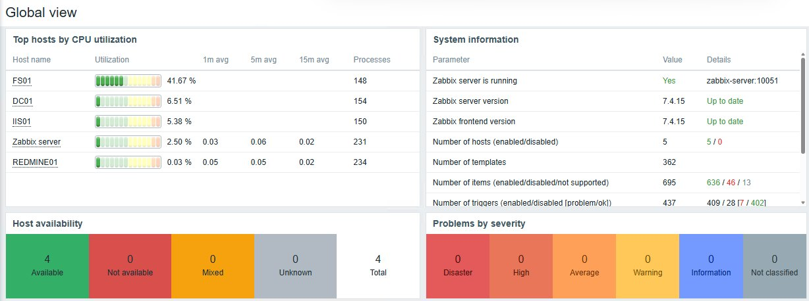

Systèmes
Windows Server, Active Directory, DNS, DHCP, GPO, IIS, RDS · Linux Debian et Ubuntu
Disponible dès la mi-novembre 2026
Technicien IT junior · support, systèmes & réseaux
Technicien IT junior, rigoureux et autonome. Deux ans de référent informatique dans une ASBL, et en fin de formation d'administrateur système orienté virtualisation chez Technocité.
01 — Compétences
Windows Server, Active Directory, DNS, DHCP, GPO, IIS, RDS · Linux Debian et Ubuntu
Hyper-V, Proxmox VE, Docker et Docker Compose
Cisco : VLAN, OSPF, NAT/PAT, ACL, spanning tree · subnetting · téléphonie IP (3CX)
SAN iSCSI, cluster de basculement Windows, SQL Server
Zabbix, PowerShell, Bash · notions d'Azure (AZ-900)
Aide aux utilisateurs, dépannage de PC et d'imprimantes, Microsoft 365, helpdesk Redmine
02 — Labos
Réalisés pendant la formation, puis refaits à la maison. Les deux premiers en détail : ce que j'ai monté, testé, et le problème que j'ai dû résoudre.

Cinq machines supervisées : contrôleur de domaine, serveur de fichiers, serveur web, serveur de tickets Redmine et le serveur Zabbix lui-même. Aucun problème ouvert.
01 Supervision
Trois réseaux séparés : utilisateurs, communication du cluster, stockage.
02 Stockage & haute disponibilité
03 Windows Server
Serveurs déployés depuis une image Sysprep, contrôleur de domaine, utilisateurs et groupes, DNS, DHCP et GPO.
04 Réseau
VLAN, routage inter-VLAN, accès SSH et filtrage par ACL, sur Packet Tracer puis sur matériel réel.
05 Virtualisation
Machines virtuelles et conteneurs LXC, stockage ZFS, snapshots et sauvegardes.
06 Conteneurs
Application web et base PostgreSQL lancées ensemble avec un seul fichier Compose.
03 — Contact
Je cherche un poste de technicien IT ou de support informatique dans la région de Mons, ou un stage de 6 semaines, dès la mi-novembre 2026.
Marvin Janssen Zepp (nouvel onglet)
Localisation
Nimy · Mons, Belgique